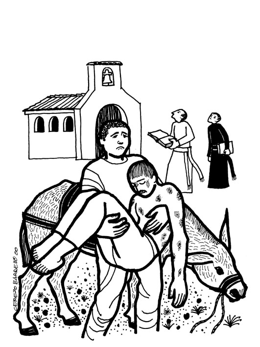
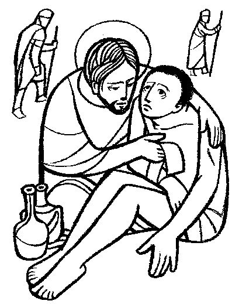

This Week: Amos 7:7-17 and Psalm 82 or Deuteronomy 30:9-14 and Psalm 25:1-10, Colossians 1:1-14, Luke 10:25-37

Cerezo
Barredo's weekly gospel illustration

Misioneros
Del Sagrado Corazon en el Peru
Next week:Amos 8:1-12 and Psalm 52 or Genesis 18:1-10a and Psalm 15, Colossians 1:15-28, Luke 10:38-42